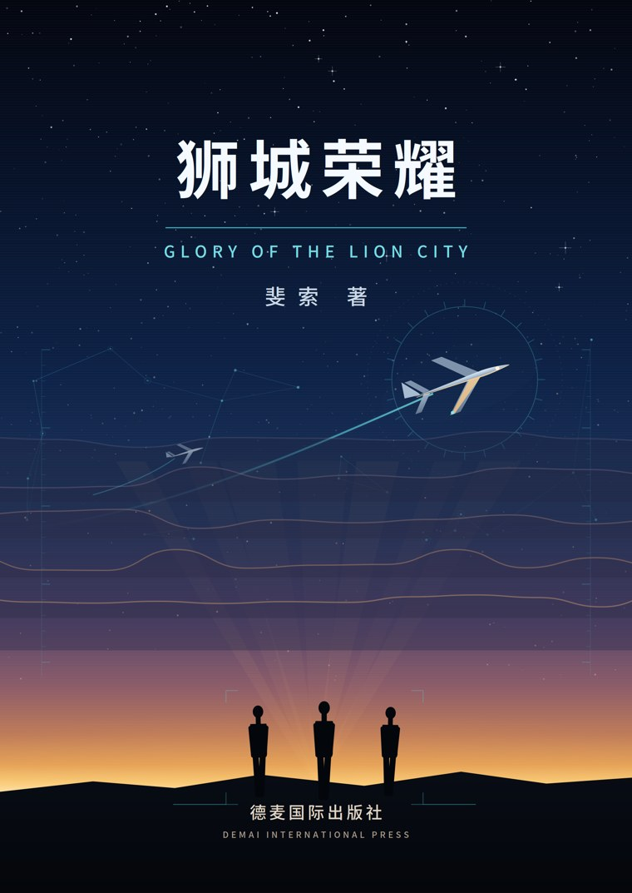

秦语十八岁那年，抽屉里压着一封帝国理工学院的录取通知。他把它延后两年，剃光头，登上开往海岛的渡轮——两年国民服役，一天都不能少。
他以为自己带去的是优势：漂亮的成绩、流利的英文、一个国际学校少年的从容。海岛用两个星期告诉他，这里没人关心这些。口令是马来语的，玩笑是快得抓不住的 Singlish，而他的口音，是一道所有人一听就听得出来的界线。第一个当众骂他“永久居民”的人叫凯文；第一个把鸡腿夹到他盘子里的人叫李想；第一个因为听错口令、在泥地里撞翻战友的人，叫王家卫——华山中学毕业，剑桥已经录取，数学强得离谱，却被四个马来语音节钉在原地。
他和父亲写了两年的语言识别系统也跟着进了军营。它能在暴雨里把噪声一层层剥开，把一句听不清的口令译成一个身体动作，能在夜间演习中提前半秒让人卧倒。它越来越好用，越来越像“答案”。
然后是那一场城市山脊救援演习。地形数据过期二十三天，屏幕上跳出一条置信度七十八的捷径，旁边写着一行灰字：需要现场确认。李想提醒过他。拉詹少校在更早的时候就提醒过他——
一个系统会失败两次。第一次，是它给出错误答案；第二次，是使用者希望这个答案是对的。—— 拉詹少校 · 第十章
那天他按下了确认。伤员没有等到。
这本书的后半程，是三个人带着这道疤走进三军军官学校，走进澳洲荒野的联合演训、蓬莱雨林的雷区、圣海沙别墅的收网夜，最后走进一个跨境洗钱与人口贩运交织的雨夜——在一个他们没有执法权的国家，两个刚认识两天的女孩被拖进包厢，而三个人手里只有一部手机、一份定位、和一句反复压在头顶的话：没有管辖权，就不要演英雄。
从海岛到军官学校，从新兵到少尉，他们学到的不是怎么赢。是怎么在最想往前冲一步的时候，停下来；是怎么让一个人的判断，重新回到那个必须由人来签名的位置上。
两年后的机场，行囊里装的不再只是一个人的前程。
同一个问题，九个方向轮番追问，普通基底与 SDE 提智基底同台对照。带上你自己的问题，去问下一问——免费，无需注册，浏览器直接用。
免费品尝金点子发生器 → 更多 SDE 智能体